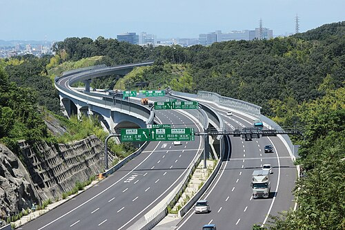
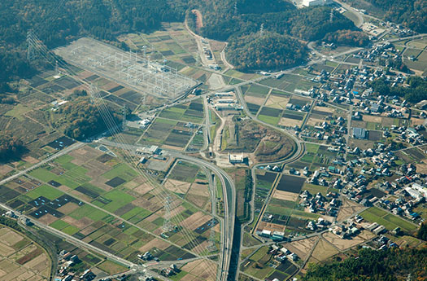
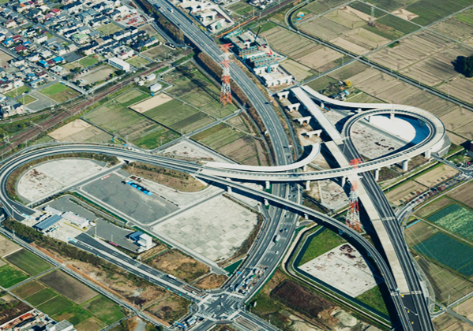
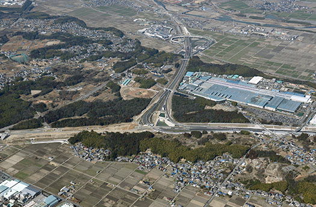
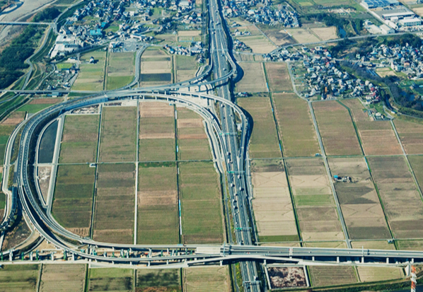
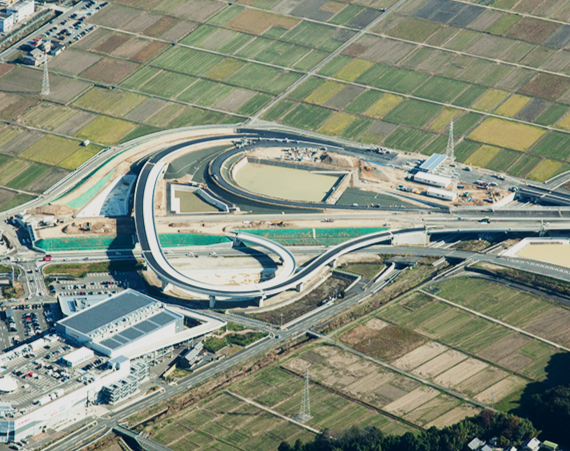
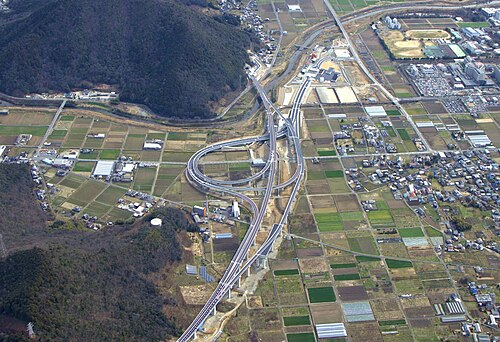
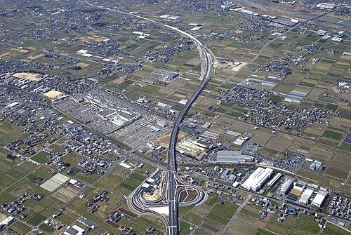

西回り

豊田東JCT

関広見IC
（9月）大垣西IC - 養老JCT
（8月）東員IC - 新四日市JCT
（10月）養老JCT - 養老IC
（3月）大安IC - 東員IC
（12月）大野神戸IC - 大垣西IC
（3月）関広見IC - 山県IC
（3月）いなべIC - 大安IC
（4月）山県IC - 本巣IC
（8月）本巣IC - 大野神戸IC
養老IC - いなべIC
開通年
2005
2009
2012
2016
2017
2019
2020
2025
未定
東回り
（3月）豊田東JCT - 美濃関JCT
（4月）美濃関JCT - 関広見IC

大垣西IC

新四日市JCT

養老JCT

東員IC

岐阜IC

本巣IC